Introduction
Every second, millions of packets move across enterprise networks. A small fraction of them are hostile. Network intrusion detection is the problem of telling those apart from ordinary traffic, quickly enough to act on the difference.
Deep packet inspection — reading payload contents — is expensive at line rate and often impossible once traffic is encrypted. Operational detection therefore leans on flow records: compact per-connection summaries of timing, volume, direction, and packet-size statistics, carrying no payload at all. This project asks how much of the malicious-versus-benign distinction survives in that reduced representation, and whether different attack types leave traces distinguishable from one another within it.
Stakeholders
- Network defenders and SOC analysts, who tune detection thresholds and absorb the cost of false positives — every spurious alert consumes analyst attention that a real incident needs.
- Organizations operating internet-facing infrastructure, for whom undetected intrusion means data loss, service disruption, and regulatory exposure.
- End users, whose data sits behind those systems and who have no visibility into whether detection is working.
- The security research community, which depends on shared benchmark datasets to compare methods — and is affected when those benchmarks turn out to have defects.
What is already known, and the gap
Flow-based intrusion detection is a mature field, and CICIDS2017 is one of its most widely used benchmarks. A large published literature reports detection results on it, frequently at accuracies above 99%.
That headline number is the gap. Two independent peer-reviewed audits ([2], [3]) found that the dataset contains flow-construction errors affecting roughly a quarter of all records, and that labels were assigned by source/destination IP address and time window without verifying that an attack had actually executed. Because attacker hosts are fixed throughout the capture, a model given IP or timestamp features can reach near-perfect accuracy by memorizing which machine was the attacker — learning nothing transferable about attacks at all.
Much of the published work on this dataset predates those audits or does not account for them. The open question is therefore not whether a model can classify CICIDS2017 accurately — that is settled, and possibly meaningless — but which of the apparent distinctions between traffic classes survive once the known artifacts are removed.
Dataset at a glance
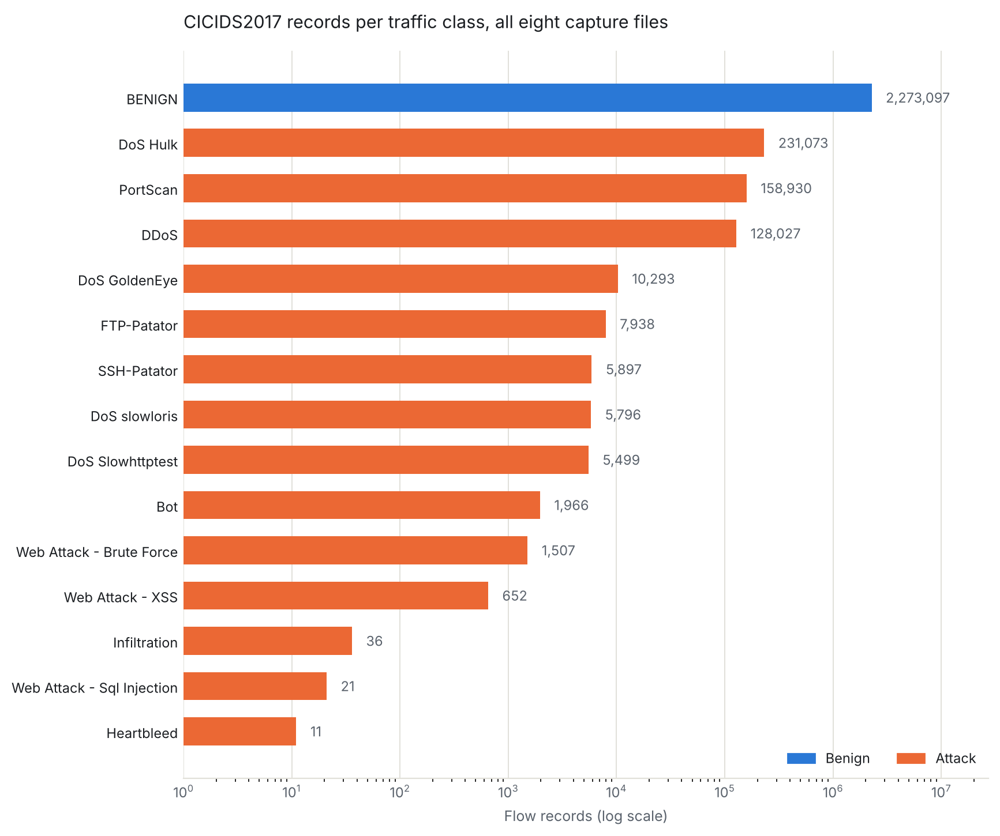
| Capture file | Size | Primary content |
|---|---|---|
| Monday-WorkingHours | 177 MB | Benign only |
| Tuesday-WorkingHours | 135 MB | Brute force (FTP, SSH) |
| Wednesday-workingHours | 225 MB | DoS / Heartbleed |
| Thursday-Morning-WebAttacks | 52 MB | Web attacks |
| Thursday-Afternoon-Infilteration | 83 MB | Infiltration |
| Friday-Morning | 58 MB | Botnet |
| Friday-Afternoon-PortScan | 77 MB | Port scan |
| Friday-Afternoon-DDos | 77 MB | DDoS |
CICIDS2017, Canadian Institute for Cybersecurity [1]. 885 MB across eight files: 2,830,743 flow records × 79 columns (78 flow features plus the label).
Project blueprint
- Characterize the dataset as it actually is — class balance, feature distributions, per-day composition, missing and degenerate values.
- Establish which flow features separate benign from malicious traffic, and attack categories from each other, with host identifiers and timestamps excluded from the outset.
- Test whether those separations hold across capture days, including against attack types absent from training.
- Quantify how much the documented labeling defects move the results, by comparing outcomes with known-suspect classes retained versus excluded.
- Report per class, with scope limits stated plainly: the findings describe a five-day simulated capture from July 2017 and a fixed attack catalog.
Research Questions
- Descriptive How are flow-level features distributed across benign traffic and each attack class, how severe is the class imbalance, and how do the known data-quality issues (duplicates, the 120-second timeout, the −1 window code, zero-payload flows) vary by class?
- Comparative Excluding destination port, which flow features separate the attack categories that have enough records to compare (the 11 attack classes with at least 600 flows), and which separations survive when artifact-prone features (Init_Win_bytes_*, durations at the 120-second cap) are removed?
- Relationship / pattern Do the four behavioral groups seen in the exploratory analysis hold up when individual flows are clustered, and are the overlapping pairs (Web Attack – Brute Force vs. XSS; Bot vs. BENIGN) separable at the flow level at all?
- Predictive Using leave-one-day-out evaluation on deduplicated data, how well does a benign-versus-malicious model detect the held-out day's attacks, all of which are unseen types, and how much of any drop comes from shifted benign traffic rather than from the new attacks?
- Explanatory How much do per-class results change when flows with identifiable defects (zero-payload web-attack flows, flows at the 120-second cap, feature vectors shared across labels) are excluded versus retained?
The questions are ordered to build on one another: RQ1 establishes what the data contains, RQ2 and RQ3 examine separability, RQ4 tests whether it generalizes, and RQ5 asks how much of the preceding is an artifact.
Changes after exploring the data (Milestone 2)
- RQ1 now describes data-quality issues per class, because they turned out to be class-specific (Figure 3).
- RQ2 excludes destination port, a testbed artifact (Figure 5), drops the three classes too small for statistics, and tests whether separations survive without artifact-prone features (Figure 4).
- RQ3 turns a general question into specific hypotheses from the per-class profiles (Figure 7).
- RQ4 becomes leave-one-day-out on deduplicated data, because every attack class lives on a single day and benign traffic shifts between days (Figure 2).
- RQ5 is kept and defined at the row level, since the exploration identified concrete, measurable defects.
Background & Related Work
The dataset and its intent
Sharafaldin, Habibi Lashkari, and Ghorbani [1] introduced CICIDS2017 as a response to the ageing benchmarks the field had been relying on. Their paper documents the testbed, the abstracted user profiles used to generate realistic benign background traffic, the schedule of attacks executed across the five days, and the CICFlowMeter extraction that produces the ~85 features per flow. It is the authoritative source for what each label is supposed to mean, and we treat it as the specification against which the data is checked.
What later audits found
Engelen, Rimmer, and Joosen [2] rebuilt the dataset from the original packet captures and found three problems that bear directly on any analysis of it. CICFlowMeter terminated flows on a single FIN packet rather than waiting for a bidirectional teardown, generating spurious trailing flows that inherited attack labels — 25.9% of the dataset, and as much as 50% within some attack classes. The labeling procedure used only IP addresses and time windows, so several Web Attack classes consist largely of connections whose payload never executed. And the DoS Hulk tool used in the capture was deprecated, sending malformed HTTP headers that did not produce the intended effect.
Lanvin and colleagues [3] reached compatible conclusions independently, by a different route — documenting packet misordering, duplication, and attacks executed but never labeled — and then quantified how much supervised detection performance shifts once corrections are applied. That two separate teams converged here is what makes the finding hard to set aside.
How this shapes our work
We adopt the methodological recommendations these audits make rather than treating them as caveats to mention and move past. Source and destination IP addresses and timestamps are excluded from modelling, because attacker hosts are fixed and including them invites a model to identify attacks by machine identity. Results are reported per class rather than as aggregate accuracy, since aggregate figures on an imbalanced dataset conceal exactly the failures that matter. And label reliability is treated as a question the project investigates, not an assumption it inherits.
Data & Exploration
Where the data comes from, how we turned it into an analysis-ready dataset, what is wrong with it, and what exploratory analysis shows it can and cannot support.
Source and provenance
- Source
- CICIDS2017, Canadian Institute for Cybersecurity, University of New Brunswick (dataset page) [1].
- Release, size and access
-
MachineLearningCSV.zip: eight CSV files, 885 MB on disk, 2,830,743 flow records × 79 columns (78 flow features plus the label). Downloaded directly from CIC after its registration form, in September 2026; no API or scraping is involved. Step-by-step instructions are in data/README.md. - Coverage
- Five working days, Monday July 3 to Friday July 7, 2017. Not a geographic sample: all traffic comes from one testbed built by CIC, with separate attacker and victim networks. Benign traffic is generated by scripted user profiles, not real users.
- Unit of observation
- One bidirectional network flow as built by CICFlowMeter. A flow ends on a FIN or RST packet or after a 120-second timeout.
- License and terms
- CIC states no license. It grants access to researchers and asks that the dataset paper [1] be cited. Because no redistribution right is granted, the repository contains code and acquisition instructions but none of the data.
- Why it fits, and what it lacks
- Labeled flows with 78 flow-level timing, volume and size features are exactly what our questions need. This release omits payloads, IP addresses, source ports, protocol and timestamps, so host identity and timing within a day cannot be studied, and it covers only 14 scripted attack types.
Data dictionary
The 69 features kept after cleaning, grouped by what they measure. Meanings come
from the CICFlowMeter documentation; we confirmed units by recomputing Flow
Bytes/s from total bytes and duration. The eight CSV files share one schema and
were stacked rather than joined, with a source_file column recording
each row's origin.
| Group | Columns | Type · units | Notes |
|---|---|---|---|
| Target | Label, is_attack | text, 15 classes · 0/1 | is_attack (derived) is the RQ4 prediction target; Label drives the per-class questions |
| Service | Destination Port | integer · port number | Kept for description, excluded from modeling (Figure 5) |
| Duration and timing | Flow Duration; Flow / Fwd / Bwd IAT Mean, Std, Max, Min; Fwd / Bwd IAT Total; Active and Idle Mean, Std, Max, Min | integer or decimal · microseconds | Flow Duration is capped by the 120 s timeout (Figure 6) |
| Volume | Total Fwd / Backward Packets; Total Length of Fwd / Bwd Packets; Subflow Fwd / Bwd Packets and Bytes; act_data_pkt_fwd | integer · packets or bytes | Subflow packet counts are identical to the totals |
| Packet size | Fwd / Bwd Packet Length Max, Min, Mean, Std; Min / Max Packet Length; Packet Length Mean, Std, Variance; Average Packet Size; Avg Fwd / Bwd Segment Size; Fwd / Bwd Header Length; min_seg_size_forward | integer or decimal · bytes | Heavily right-skewed |
| Rates | Flow Bytes/s, Flow Packets/s, Fwd / Bwd Packets/s; Down/Up Ratio | decimal · per second; integer ratio | Undefined when duration is 0 (those rows are removed) |
| TCP flags | FIN, SYN, RST, PSH, ACK, URG, CWE, ECE Flag Count; Fwd PSH / URG Flags | integer · 0/1 indicator | Only 0 or 1 despite the names; Fwd PSH = SYN and Fwd URG = CWE row for row |
| TCP window | Init_Win_bytes_forward / backward | integer · bytes | −1 means no TCP window was seen (non-TCP flow); treated as a category |
| Bookkeeping | source_file | text · 8 capture files | Added by us |
Cleaning and preprocessing
All cleaning is in notebooks/01-data-cleaning.ipynb, which reads the untouched raw files and writes one analysis-ready CSV. src/m2_rebuild_clean.py replays the same steps as a script and reproduces every count below.
| Step | Decision | Rows after |
|---|---|---|
| Load | Stack 8 files; strip the leading space from 65 of 79 headers | 2,830,743 |
| Missing values | Remove 2,867 zero-duration rows whose per-second rates were NaN or infinite | 2,827,876 |
| Duplicates | Remove 307,078 exact duplicates (10.86%), keeping one copy | 2,520,798 |
| Labels, columns | Fix the broken dash in three Web Attack labels; drop 8 always-zero columns and a duplicated header-length column | 2,520,798 |
| Impossible values | Remove 142 rows with negative duration or sizes (all BENIGN) | 2,520,656 |
| Clipping, target | Set 2,773 negative minimum inter-arrival times to 0; add is_attack | 2,520,656 × 72 |
Before and after — real rows from the raw files:
| Issue | Before | After, and why |
|---|---|---|
| Zero duration | Flow Duration 0 µs, 2 packets, 37 bytes; Flow Bytes/s = ∞, Flow Packets/s = ∞ | Row removed. A rate over zero time is undefined, so any filled-in value would be invented. |
| Duplicate | One SSH-Patator flow (port 22, 74 µs, one packet each way, 0 bytes) appears 116 times | Kept once; SSH-Patator falls from 5,897 to 3,219 rows. Copies would land on both sides of a train/test split. |
| Encoding | Web Attack � XSS | Web Attack - XSS |
| Impossible value | Flow Duration −1 µs; Flow Bytes/s −12,000,000 | Row removed: a flow cannot last less than zero time. |
| Rounding error | Flow IAT Min −1 µs | Clipped to 0, the nearest real value. Removing these rows would have cost 4 of the 11 Heartbleed flows. |
Kept on purpose: packets larger than the 1,500-byte Ethernet MTU (in 90% of DoS Hulk flows, so part of the attack signal, not noise), the −1 window code, and durations at the 120-second cap. Scaling is deferred to modeling so it can be fit on training data only.
Data quality, bias and ethics
| Dimension | What we found |
|---|---|
| Completeness | Only 0.10% of rows had missing values, all a division-by-zero artifact. The larger gap is by design: no IPs, timestamps or protocol. |
| Consistency | Besides the dropped duplicate column, four more column pairs are identical row for row, and 66 feature pairs have |Spearman ρ| ≥ 0.95. The 69 features carry far less independent information than their number suggests. |
| Validity | The −1 window code marks non-TCP flows: none has a SYN or ACK flag and 96% go to port 53 (DNS). 1,394 cleaned rows have exactly the same features as a row with a different label, a floor on achievable error. |
| Representativeness | Attacks are 16.9% of rows; the largest class outnumbers the smallest about 190,000 to 1; three classes (DoS Hulk, DDoS, PortScan) make up 92% of attack rows; every attack class sits in exactly one capture file. |
| Usability | Heartbleed (11 rows), SQL Injection (21) and Infiltration (36) are too small for statistical claims. The cleaned data fits in about 1.45 GB of memory. |
Milestone 0 risks, revisited.
- Class imbalance — confirmed, worse than expected. We now plan per-class reporting and class-weighted evaluation. The proposal's oversampling would mostly duplicate Heartbleed's near-identical timeout fragments.
- Missing attack types — confirmed. The usable catalog is 11 attack classes, not 14.
- Narrow time window — confirmed and sharpened. Day and class are confounded, and benign traffic itself shifts between days.
- Compute — reduced. All Milestone 2 work ran on one ordinary machine.
- New: 10.86% exact duplicates (85,264 of them spanning two capture files), the 120-second timeout artifact, the −1 window code acting as a protocol proxy, and labels that don't reflect executed attacks (90% of Web Attack – Brute Force and 96% of XSS flows carry no forward payload).
Privacy and licensing. All traffic is synthetic and the files we use contain no IP addresses, payloads or timestamps. We publish only figures and aggregate tables. The main ethical risk is overstated results: accuracies above 99% on this benchmark can mislead defenders, so we report per class and state scope limits plainly.
Exploratory analysis
Every feature is heavily right-skewed. Benign Flow Duration, for instance, has a mean of 12.2 s but a median of 0.04 s. So we summarize with medians and quartiles, plot on log scales, and compare distributions with the Kolmogorov–Smirnov (KS) distance: 0 means identical distributions, 1 means no overlap, and it works on features with different units.
| Feature | Benign median [Q1, Q3] | Attack median [Q1, Q3] |
|---|---|---|
| Flow Duration (s) | 0.040 [0.0002, 1.10] | 6.03 [0.012, 85.8] |
| Total Fwd Packets | 2 [2, 4] | 4 [2, 7] |
| Total Length of Fwd Packets (bytes) | 68 [18, 208] | 30 [2, 350] |
| Packet Length Mean (bytes) | 61.4 [6.0, 103.0] | 777.5 [3.3, 918.8] |
| Flow IAT Mean (ms) | 16.1 [0.08, 176.7] | 1,061 [2.9, 7,162] |
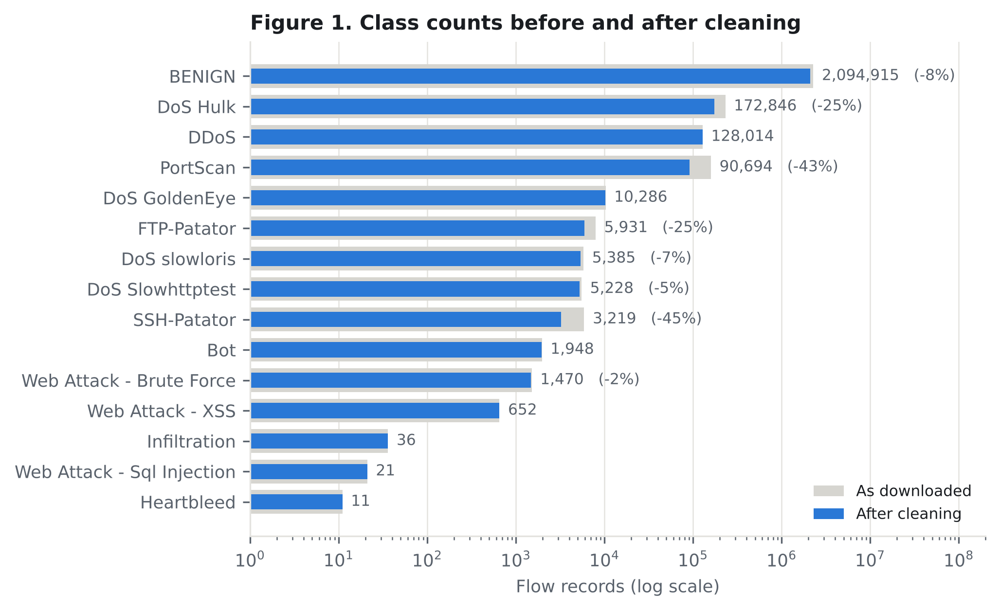
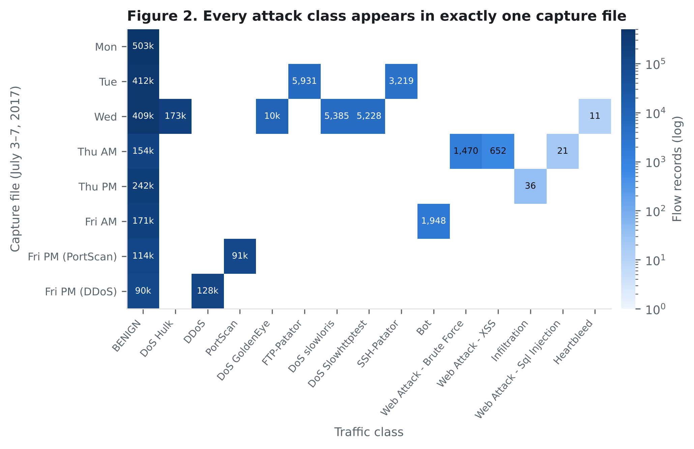
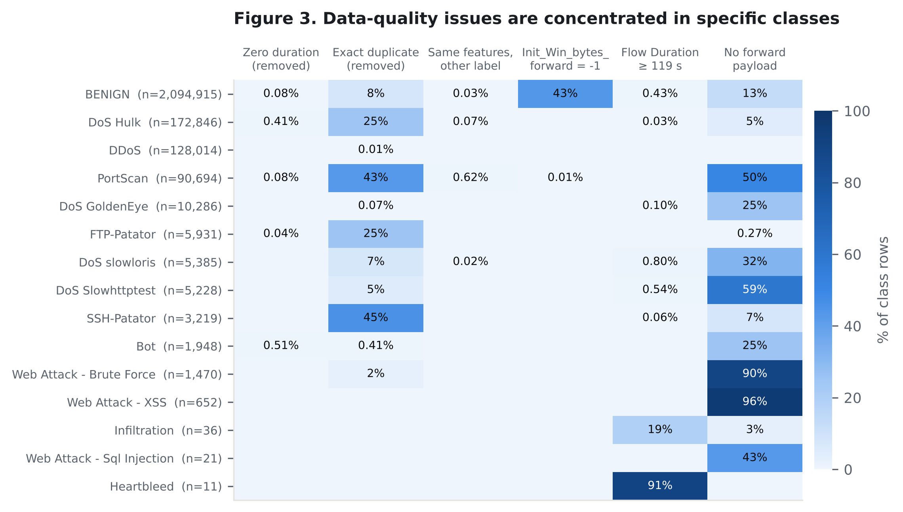
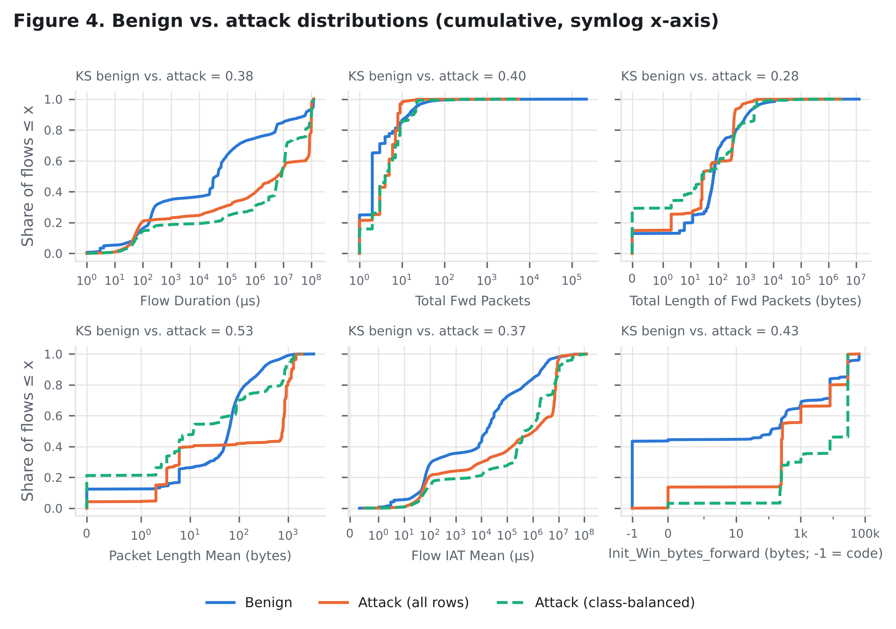
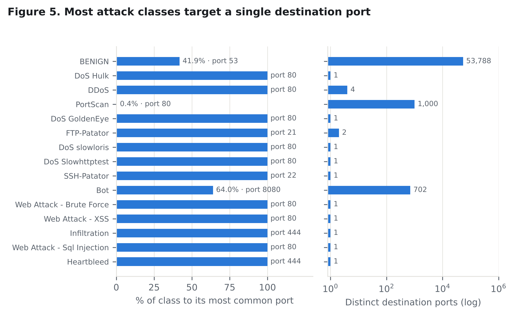
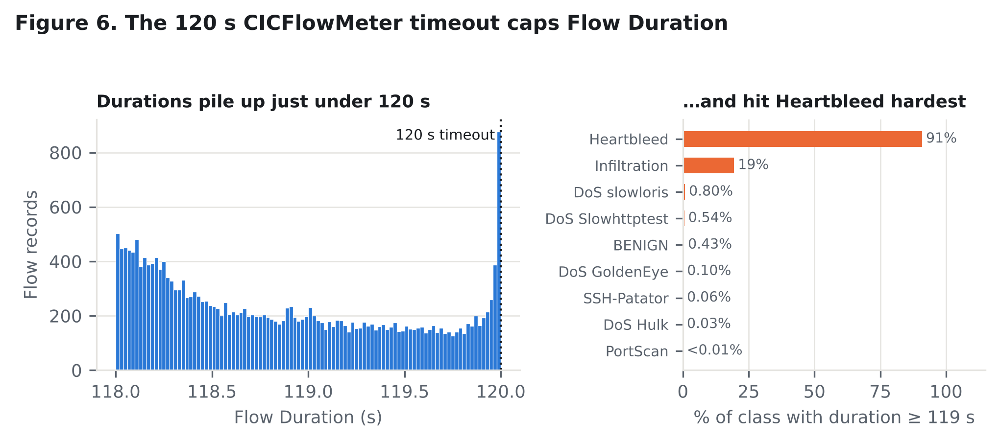
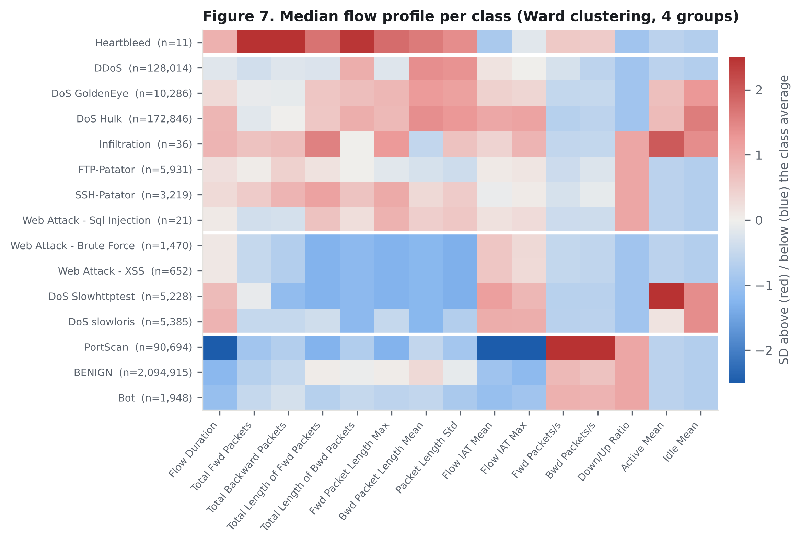
What the exploration changes: pooled benign-vs-attack comparisons overstate separability; Destination Port, the window fields and durations at the 120-second cap need special handling; some classes cannot be told apart at the flow level and three are too small to analyze; and day and class are confounded. The research questions were revised accordingly. The analysis code is in two notebooks, 01-data-cleaning.ipynb and 02-eda.ipynb, and the scripts in src/.
Models & Evaluation
Milestone 3 asks whether the flow-level differences found in Milestone 2 hold up when models must generalize. The short answer: attack types are highly separable from one another once a model has seen them, but a detector trained on four capture days catches about half of a fifth day's never-seen attacks, and much of what looks like success or failure traces back to known dataset artifacts.
Modeling plan
| Question | Task | Methods | Why these |
|---|---|---|---|
| RQ4 — does benign-vs-attack detection transfer to an unseen day? | Binary classification, leave-one-day-out | Baselines: majority class, stratified guess (Tyler), single-feature rule. Candidates: logistic regression, histogram gradient boosting. Comparison: random forest (Luis). | 2.5M rows, 64 skewed numeric features, rare positives. Logistic regression is a transparent linear reference; gradient boosting captures thresholds and interactions, needs no scaling, and fits in 8 GB of RAM. Distance-based methods (k-NN, SVM) do not scale to 2M rows. The random forest was added after the stability check: bagging averages independently trained trees, the standard remedy for a model whose results swing with the random seed. |
| RQ4, part 2 — benign shift or unseen attacks? | Controlled comparison | Same models under three training conditions (A/B/C, below) | Isolates the two causes RQ4 names, on identical test rows. |
| RQ5 — do known defects change per-class results? | Binary classification | RQ4 models retrained without defect-flagged flows | Same protocol as RQ4, so only the training rows differ. |
| RQ2 — which features separate attack types, without artifacts? | Multi-class classification (11 classes) | Gradient boosting vs. majority / stratified; permutation importance | A model that can use any combination of features is a stronger separability test than one-feature-at-a-time KS distances. |
| RQ3 — do the EDA groups hold at the flow level? | Clustering | k-means: the hypothesized k = 4 vs. a tuned k (Tyler) | Unsupervised, so the groups are not forced by the labels. |
Data preparation and leakage controls
- Features (64): the 69 cleaned flow features minus
Destination Port(a testbed identifier; Figure 5) and four columns that are exact copies of others. The twoInit_Win_bytes_*window fields stay in the main models and are removed in an RQ2 robustness run. The list was fixed from Milestone 2 decisions before any model was trained. - Preprocessing: logistic regression gets a signed log transform and standardization, both fit inside a pipeline on training rows only. Gradient boosting and the random forest use raw values. All three use balanced class weights.
- The held-out day is never used to fit anything (no leakage).
Hyperparameters are chosen by an inner leave-one-day-out loop over the four
training days (the random forest was not tuned; see Result 7). The search is a
small manual grid: three settings each for logistic regression (the
regularization strength
C) and gradient boosting (tree size, learning rate, L2 shrinkage). Each setting is scored by its mean PR-AUC on the inner held-out days. To keep run time down, tuning uses every attack row but only 20% of benign training rows. The winner is refit on all training rows. Every inner score is inresults/m3/rq4_tuning.csv. The alert threshold is set on a calibration split of those days. Early stopping uses a split of the training rows. - No duplicate crosses the split: exact duplicates were removed across all files before modeling (Milestone 2).
Validation and metrics
Leave-one-day-out (5 folds) is the only split that answers RQ4: every attack type lives on a single day (Figure 2), so a random split would test on attack types the model has already seen. Each model's alert threshold is set so that 1% of benign training-day flows would raise an alert, which is a fixed analyst budget. We then measure what happens on the new day:
- Recall: share of the unseen day's attack flows that raised an alert (the detection rate RQ4 asks about).
- False-alarm rate (FPR): share of the unseen day's benign flows that raised an alert. If it drifts above 1%, the budget did not transfer.
- PR-AUC: threshold-free ranking quality for a rare positive class, always shown next to its no-skill level (the day's attack share).
Accuracy is not reported: the always-benign baseline already scores 80% or more on every day. Monday has no attacks, so it measures false alarms only.
Result 1: detection of never-seen attacks is partial and uneven (RQ4)
| Model (4 attack days pooled) | Recall | False alarms | Precision | PR-AUC | Monday FPR |
|---|---|---|---|---|---|
| Majority class (baseline) | 0% | 0% | — | 0.18* | 0% |
| Stratified guess (baseline) | 11.5% | 15.7% | 16.4% | 0.18* | 21.1% |
| Single-feature rule (best one feature per fold) | 3.0% | 0.8% | 51.3% | 0.18 | 0.3% |
| Logistic regression | 22.1% | 3.3% | 63.9% | 0.32 | 1.6% |
| Gradient boosting | 47.7% | 4.2% | 75.4% | 0.42 | 1.4% |
| Random forest (comparison, untuned) | 55.4% | 4.2% | 77.9% | 0.46 | 1.9% |
PR-AUC is the mean over the four attack days. *No-skill level: the mean attack share of those days. Recall, false
alarms and precision pool the confusion counts of all four days; per-day values
are in Figure 8 and results/m3/m3_summary_rq4_by_day.csv. The random
forest's higher pooled recall comes from one Wednesday class: it catches about
37,000 more DoS Hulk flows, more than its whole lead, while catching fewer on
most other classes. It is compared day by day in Result 7.
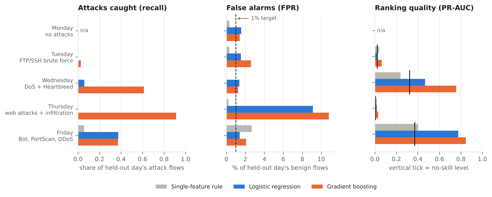
Result 2: most of the drop comes from unseen attacks, except on Thursday (RQ4, part 2)
Each held-out day was split in half, and the same test half was scored under three training conditions: A the other four days only; B A plus that day's benign flows (benign shift removed, attacks still unseen); C A plus that day's benign and attack flows (in-distribution). A→B measures the benign-shift effect; B→C measures the unseen-attack effect.
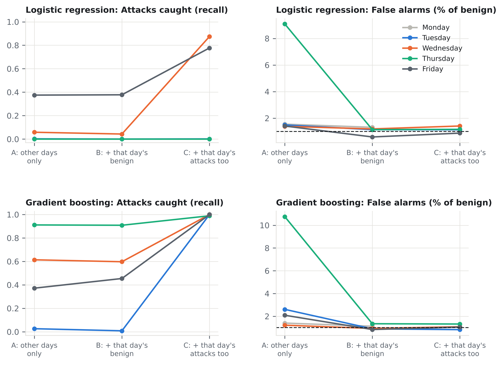
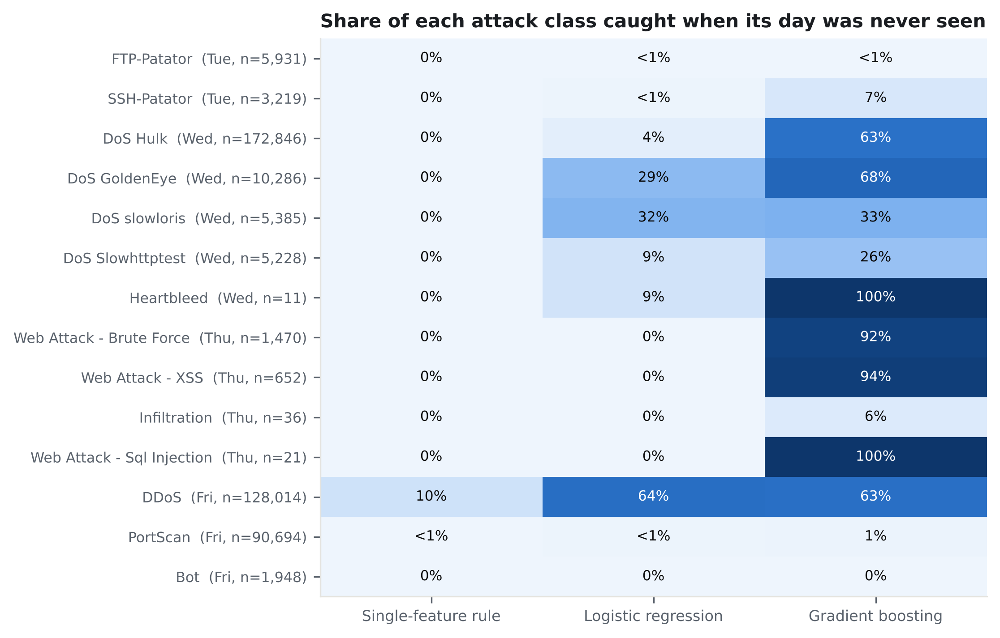
Result 3: error analysis — what the misses and false alarms are
- Thursday's "false alarms" are probably a mislabeled attack. 96% of them (40,922 of 42,787) come from the afternoon infiltration capture. They hit 2,603 different ports and are tiny (median 65 µs, 4 bytes). 89% carry a 1024-byte initial window, a value found in half of all PortScan flows but in only 0.04% of benign flows on the other days. The dataset's own documentation says the infiltration scenario included a second-stage port scan from the compromised host [4], yet only 36 flows are labeled Infiltration. The model is likely flagging real scan traffic that the labels call benign, which is the kind of unlabeled executed attack the audits describe [3]. The CSVs omit IP addresses, so we cannot confirm this flow by flow.
- Half of PortScan cannot be detected from flow features at all. Once destination port is excluded, 47% of PortScan flows (42,858) have a feature vector identical to some benign flow. A scan probe is a 1-packet, 2-byte connection attempt indistinguishable from an ordinary failed connection.
- Bot traffic (0% caught) looks like benign traffic: short, small flows, consistent with the EDA, which placed Bot in BENIGN's group (Figure 7).
- The window field steers decisions. Among Wednesday's DoS Hulk
flows, those caught have a median
Init_Win_bytes_forwardof 251; those missed have 0. Missed FTP- and SSH-Patator flows have a median of 29,200. These values identify host operating systems rather than attack behavior, so Result 5 tests their removal. - Stability: refitting the detector with three other random seeds moves held-out recall by under 2 points on Wednesday, Thursday and Friday, but from 1.9% to 22% on Tuesday (FTP-Patator alone: 0.2% to 31%). Where the model has almost no signal for an unseen attack, small arbitrary training choices decide what it catches. A random forest, built to reduce exactly this kind of variance, did not fix it (Result 7).
Result 4: defective flows inflate Thursday's success (RQ5)
Three defect flags, defined as in Milestone 2, cover 55,392 flows (2.2%): web-attack flows with no forward payload (90% of Brute Force, 96% of XSS), flows cut at the 120-second timeout (91% of Heartbleed), and feature vectors shared with another label (47% of PortScan).
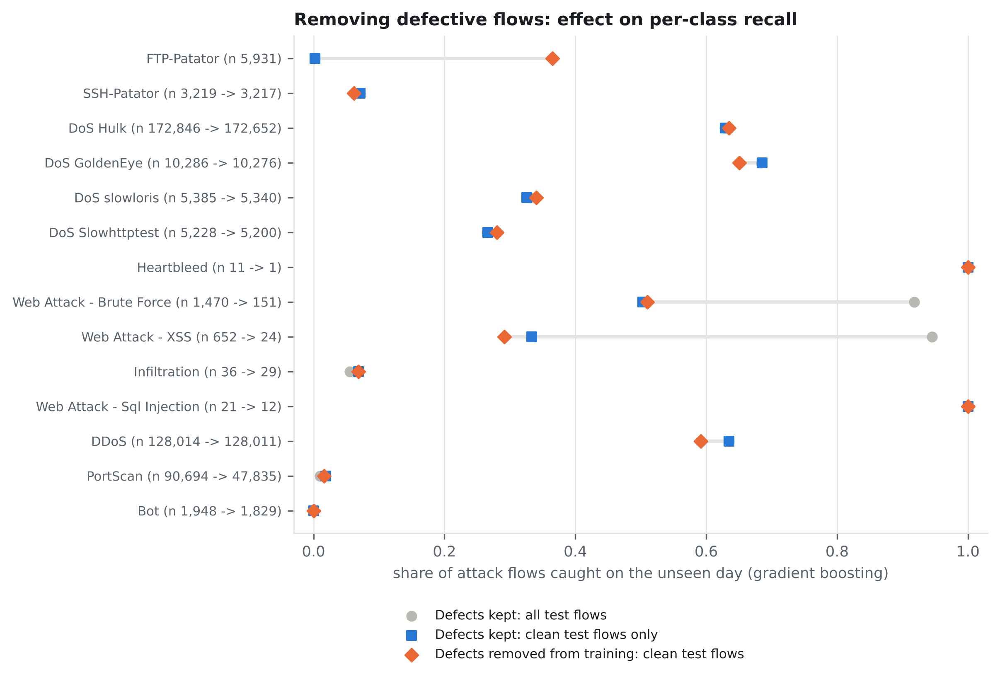
Result 5: attack types separate cleanly once seen; transfer leans on the window field (RQ2)
Among the 11 attack classes with at least 600 flows (5-fold cross-validation, each class capped at 20,000 flows), gradient boosting reaches a macro-F1 of 0.917 against 0.090 for stratified guessing. Removing the window fields costs almost nothing (0.908), and also removing timeout-capped flows leaves 0.893. The one pair that does not separate is the pair the EDA flagged: 63% of XSS flows are predicted as Brute Force (Figure 12).
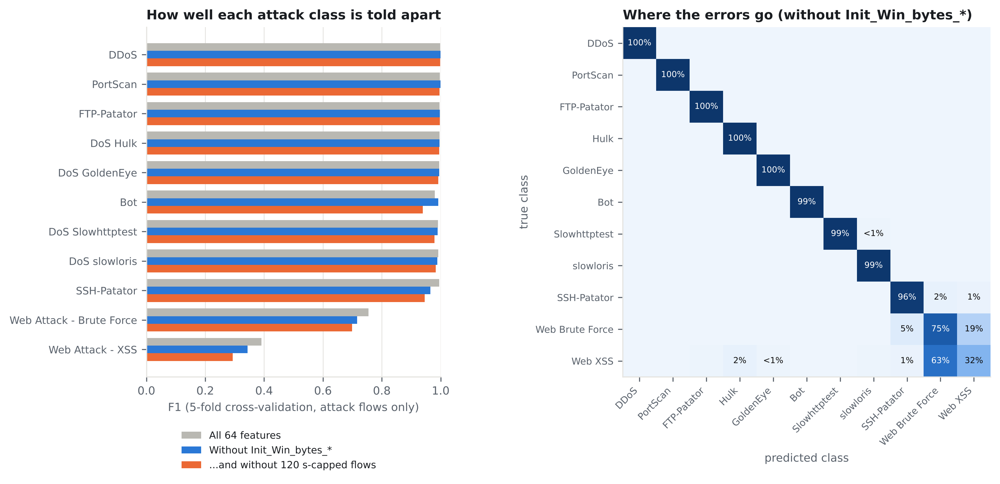
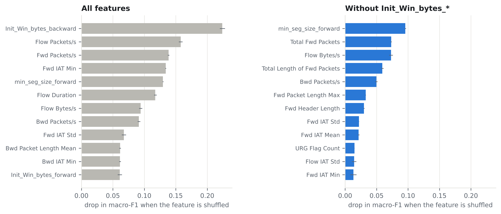
Transfer is a different story. Retraining the RQ4 detector without the two window fields lowers Wednesday's recall at the 1% budget from 61% to 9% and Friday's from 37% to 28%. Ranking quality holds up (PR-AUC 0.84 and 0.73), which means the calibrated threshold, not the ordering, no longer carries over to the new day. Part of the apparent cross-day DoS detection rests on a host-identifying field (a likely shortcut).
Result 6: the EDA's four groups only partly hold under clustering (RQ3)
| k-means configuration | ARI vs. EDA groups | Silhouette | What it shows |
|---|---|---|---|
| k = 4, all flows (reference) | 0.058 | 0.387 | BENIGN is the majority of every cluster; imbalance drowns the structure. |
| k = 4, 2,000 flows per class | 0.227 | 0.467 | Better alignment, but no cluster is dominated by one class; Heartbleed shares a cluster with SSH-Patator. |
| k = 22, balanced, 6 low-correlation features | — | 0.704 | Tighter clusters that split the EDA groups. Brute Force and XSS still land together (83% and 93% in one cluster). |
Tyler's analysis (03-kmeans-clustering.ipynb) chose k from the inertia and silhouette curves over k = 2–69. The clustering and the supervised results agree: Brute Force and XSS are not separable at the flow level, and Bot sits with benign traffic.
Result 7: a random forest does not stabilize unseen-day detection (RQ4)
The stability check (Result 3) found that gradient boosting's Tuesday recall ranges from 1.9% to 22% when only the random seed changes. There the seed only decides which 10% of training rows early stopping holds out, so the model is sensitive to very small training differences. Gradient boosting builds its trees in sequence, each correcting the last. A random forest instead trains 100 trees independently, each on its own random 200,000-row sample and considering a random 8 of the 64 features at each split, and averages their votes. If Tuesday's swings were random noise, averaging should cancel them. The forest uses the RQ4 protocol unchanged: leave-one-day-out, the same 64 features, the same fit/calibration split, the same 1% benign threshold, and the same metrics. It ran once per day with seed 5502 and on Tuesday with the three extra stability seeds (05-random-forest.ipynb).
| Tuesday, seeds 5502 / 1 / 2 / 3 | Recall range | FTP-Patator recall range | PR-AUC range | False alarms |
|---|---|---|---|---|
| Gradient boosting | 1.9% – 22.2% | 0.2% – 30.7% | 0.063 – 0.109 | 2.4% – 2.6% |
| Random forest | 0.9% – 17.5% | 0.8% – 26.4% | 0.059 – 0.077 | 2.7% – 2.8% |
The forest's recall range is only slightly narrower (17 points vs. 20), so bagging did not make Tuesday's detection reliable. Its ranking quality varies less between seeds but stays low at every seed (PR-AUC 0.059 to 0.077, against a no-skill level of 0.022, the attack share of Tuesday's flows). With this little signal for the brute-force attacks, small training differences decide which flows clear the threshold, for either ensemble.
| Held-out day (seed 5502) | No-skill PR-AUC | PR-AUC: LR / GB / RF | Recall: LR / GB / RF | False alarms: LR / GB / RF |
|---|---|---|---|---|
| Monday (benign only) | — | — | — | 1.6% / 1.4% / 1.9% |
| Tuesday | 0.022 | 0.020 / 0.063 / 0.059 | 0.2% / 2.6% / 0.9% | 1.5% / 2.6% / 2.8% |
| Wednesday | 0.322 | 0.467 / 0.756 / 0.954 | 5.8% / 61.4% / 78.9% | 1.4% / 1.2% / 1.2% |
| Thursday | 0.005 | 0.018 / 0.031 / 0.023 | 0.0% / 91.2% / 2.6% | 9.1% / 10.8% / 10.7% |
| Friday | 0.370 | 0.776 / 0.846 / 0.808 | 37.5% / 37.2% / 37.6% | 1.4% / 2.1% / 2.2% |
LR = logistic regression, GB = gradient boosting, RF = random forest. Source:
results/m3/rq4_forest.csv and results/m3/m3_summary_rq4_by_day.csv.
- Wednesday is the one clear difference. The forest's PR-AUC (0.954) is above gradient boosting's best across all four of its seeds (0.897), so the gap is larger than seed noise. The gain is concentrated in DoS Hulk, the largest class (84% caught vs. 63%). On the smaller DoS classes the forest catches less: GoldenEye 51% vs. 68%, Slowhttptest 5% vs. 26%, slowloris 28% vs. 33%. Result 5 showed that gradient boosting's Wednesday transfer leans on the host-identifying window field. The forest was not rerun without it, so its Wednesday gain may rest on the same field.
- Thursday's gap does not mean the forest detects worse. The forest catches 2% of web Brute Force and XSS flows, where gradient boosting catches 92% and 94%. But Result 4 showed most of gradient boosting's catches there are zero-payload flows that probably contain no attack. Both models raise about 11% false alarms on Thursday, consistent with the same unlabeled scan traffic. The forest's Thursday errors were not analyzed separately.
- Friday is a tie (37.6% vs. 37.2%): both catch about 64% of DDoS, about 1% of PortScan, and no Bot traffic.
- Neither model held the 1% alarm budget on any unseen day.
Decision: gradient boosting stays the primary RQ4 model and the forest is reported as a comparison. The forest was not tuned. An inner leave-one-day-out search like gradient boosting's was too costly on 2.5M rows, and an ordinary grid search with random folds would leak each day's attack types into validation. It also ran with one seed on four of the five days. Both points favor gradient boosting, so the comparison is conservative. Either way, the forest does not change the answer to RQ4: what a model catches on a day with never-seen attacks depends more on the attack type than on the ensemble method.
What this evaluation does not show
- Not causal: features that predict an attack class describe this testbed's tools and hosts, not why attacks look the way they do.
- Not general: one simulated week from 2017, one attack catalog, and attacker hosts fixed throughout. Each held-out day contains only one or two attack families, so each fold is closer to a case study than a sample.
- Not final on small classes: Heartbleed (11), SQL injection (21) and Infiltration (36) results are anecdotes.
- Limited by labels: where labels are wrong (Thursday's scan, zero-payload web flows), recall and false alarms are measured against the wrong answer.
Code: every number above comes from scripts in
src/
(m3_common.py, m3_rq4_transfer.py, m3_rq5_defects.py,
m3_rq2_separability.py, m3_error_analysis.py,
m3_stability.py, m3_figures.py), with seed 5502. The
result tables are in
results/m3/,
and the baselines and clustering are in Tyler's notebooks
04
and 03.
The random forest comparison is in Luis's notebook
05-random-forest.ipynb, which imports the same
m3_common.py functions.
Plain-Language Guide
The Models & Evaluation section is written for readers who already know machine learning. This guide explains its terms for someone who doesn't, using our own data as the example wherever possible. Terms with a dotted underline in that section link here; your browser's Back button returns you to where you were.
The data
- Flow
- One conversation between two computers: all the packets sent back and forth in one connection, summarized as a single row of numbers (how long it lasted, how many packets and bytes went each way, the time gaps between packets). The CICFlowMeter tool built these rows from the raw traffic. Our cleaned data has 2,520,656 flows, and every model here judges one flow at a time.
- Feature
- One measured column of a flow, such as
Flow DurationorTotal Fwd Packets. The models use 64 of them. A feature is the evidence a model gets to look at; it never sees the actual content of the traffic. - Label, benign, attack
- Each flow comes tagged by the dataset's creators as BENIGN (normal traffic) or with one of 14 attack names. RQ4's models only answer "benign or attack?". The labels were assigned by matching flows to the attack schedule by machine and time window, which is how some normal flows ended up labeled as attacks, and some attack flows as normal (Results 3 and 4).
- Class imbalance and balanced class weights
- About 83% of flows are benign and some attack types have only a handful of flows. A model can look good just by saying "benign" every time. Balanced class weights fix this during training: each attack flow counts for more, so that attacks and benign traffic carry equal total weight in what the model tries to get right.
- Window field (
Init_Win_bytes_*) - The TCP window size a computer announces when it opens a connection. It is mostly a setting of the computer's operating system, not something the attack chooses. Because the testbed used the same few attacker and victim machines all week, this number can quietly tell a model "this is the attacker's computer". That works inside this dataset and would fail on any other network (see shortcut).
- Zero-payload flow
- A flow in which the client sent no data at all. A web attack works by sending malicious text in a request, so a "web attack" flow that sent nothing cannot contain the attack. It is most likely a normal connection that happened during the attack's time window and got the attack's label. 90% of Brute Force and 96% of XSS flows are like this.
- 120-second timeout
- CICFlowMeter ends any flow still open after 120 seconds and starts a new one. For a flow cut at that limit, its duration and per-second rates describe the tool's cutoff rather than the connection itself.
- Two flows whose 64 numbers are exactly the same but whose labels differ. No model can get both right, because it has nothing to tell them apart. Half of PortScan flows look exactly like some benign flow.
How we test the models
- Training and test data
- A model learns patterns from training rows and is graded on test rows it has never seen, like an exam whose questions were not in the homework. Grading on training rows would only show how well it memorized.
- Leave-one-day-out
- The data covers five days. We train on four days and test on the fifth, then repeat so each day takes a turn as the test day. Every attack type in this dataset happened on only one day, so the test day's attacks are always types the model has never seen. That imitates the real question: will the detector catch a new kind of attack? A random split would put Wednesday's DoS flows in both training and test and make detection look far easier than it is.
- Leakage
- Any way information about the test data slips into training, which makes results look better than they would be in real use. We guard against it by removing duplicate flows, which could land on both sides of the split, and by never using the test day to train, scale features, set the threshold or choose settings.
- Baseline
- A deliberately simple reference point that a real model must beat to show it learned anything. Ours are majority class (always say benign; catches nothing), stratified guess (guess at random, saying "attack" as often as attacks occurred in training), and a single-feature rule (alert on the one column that best separated attacks on the training days).
- Calibration split
- 20% of the training days' rows that are held back from model training and used only to set the alert threshold. A model is overconfident on rows it trained on, so the threshold is set on rows it has not seen, still without touching the test day.
- Alert threshold and the 1% budget
- The model gives every flow a score from 0 to 1 for how attack-like it looks.
To turn scores into alarms we need a cutoff line. We take the benign flows in
the calibration split, line up their scores, and put the line where only the
top 1% sit above it. That is all
pick_thresholdinm3_common.pydoes:np.quantile(benign_scores, 0.99)means "the score that 99% of normal flows fall below". On Tuesday the random forest's line came out at 0.168. Think of setting a smoke detector so it only goes off once per 100 times you cook normally. On the unseen day we then ask how many attacks scored above the line (recall) and whether normal traffic still crossed it only 1% of the time. It never did: 1.2% to 11%, depending on the day. - Hyperparameters and tuning
- Settings chosen before training rather than learned from the data, such as the number of trees or how fast a model learns. Tuning means trying several settings and keeping the best. To avoid leakage we tune with an inner leave-one-day-out loop over the four training days only. The random forest was not tuned.
- Random seed and variance
- Many training steps involve random choices (which rows to sample, which rows to hold out). The seed is the starting number for those choices: same seed, same result. Rerunning with different seeds is a stress test. If the results swing a lot (high variance), one run cannot be trusted. Gradient boosting's Tuesday recall swung from 1.9% to 22% this way.
- Cross-validation (5-fold)
- Split the data into five parts, train on four and test on the fifth, rotate five times and average. RQ2 uses random parts because its question is whether attack types the model has seen can be told apart; RQ4 uses days instead because it asks about unseen types.
How we score them
- True/false positives and negatives
- Every flow lands in one of four boxes. True positive: an attack that raised an alarm. False negative: an attack that was missed. False positive: a false alarm on normal traffic. True negative: normal traffic correctly left alone. Every metric below is built from these four counts.
- Recall (detection rate)
- Of all the attack flows, the share that raised an alarm. On Wednesday the random forest flagged 152,808 of 193,756 attack flows: 78.9% recall.
- False-alarm rate (FPR)
- Of all the normal flows, the share that raised an alarm, which is the analyst's wasted effort. Gradient boosting's 10.8% on Thursday means 42,787 of 396,240 normal flows were flagged.
- Precision
- Of all the alarms raised, the share that were real attacks. Gradient boosting's Thursday precision of 4.4% means about 96 of every 100 alarms were false.
- Why not accuracy
- Accuracy is the share of all flows judged correctly. Because most flows are benign, a model that never raises an alarm already scores 80% or more on every day, so accuracy says almost nothing about catching attacks.
- PR-AUC and the no-skill level
- Recall and precision depend on where the threshold sits. PR-AUC ignores the threshold and asks a broader question: if you sorted all of a day's flows from most to least attack-like, how close to the top are the attacks? 1.0 means every attack ranks above every normal flow. The no-skill level is what a model that learned nothing would score, one that gives every flow a random score. Its attacks end up scattered evenly through the sorted list, so every part of the list, top included, is about as attack-heavy as the day overall. Its PR-AUC therefore comes out at about the day's share of attacks: 2.2% of Tuesday's flows are attacks, so a random scorer gets about 0.022 there, and 32% of Wednesday's are, so it gets about 0.32. Each day's score has to be read against its own floor. Tuesday's 0.06 is about three times the floor but still weak. Wednesday's 0.95 against a floor of 0.32 is strong.
- F1 and macro-F1
- F1 combines precision and recall into one number that is high only when both are high. Macro-F1 averages F1 over the attack classes with each class counting equally, so a small class like XSS matters as much as DoS Hulk.
- Pooled results
- Result 1 adds up the four boxes across the four attack days before computing recall, false alarms and precision, so days with many flows (Wednesday, Friday) weigh the most. Its PR-AUC is instead the plain average of the four days.
The models
- Decision tree
- A flowchart of yes/no questions about a flow's features ("Did it last more than 5 seconds? Were its packets under 40 bytes?") that ends in a verdict. Training picks the questions that best separate attacks from normal traffic. The models below are built from many trees.
- Logistic regression
- Multiplies each feature by a learned weight, adds them up and turns the total into a probability. It can only draw a straight boundary between attack and normal (after the transform below), so it cannot express a rule like "attacks are either very short or very long". We use it as a transparent reference.
- Signed log transform and standardization
- Feature values run from 0 to over 100 million, which swamps logistic regression. The signed log shrinks large numbers (120,000,000 becomes about 18.6) while keeping the −1 "not observed" code distinct from 0. Standardization then puts every feature on the same scale. Both are fit on training rows only. Tree models do not need either.
- Gradient boosting (HGB)
- Builds trees one after another, each trying to fix the mistakes of the trees before it. "Histogram" means each feature's values are grouped into 255 bins first, which keeps 2 million rows in memory. Early stopping holds out 10% of the training rows and stops adding trees once they stop improving the score on those rows. This is our primary RQ4 model.
- Random forest and bagging
- Trains 100 trees independently, each on its own random sample of rows and looking at a random 8 of the 64 features at each question, then averages their votes. Bagging (bootstrap aggregating) is this idea of training many models on random resamples and averaging them. Averaging cancels the random mistakes individual trees make, but not mistakes they all share, which is why it did not fix Tuesday (Result 7).
- Ensemble
- A model made of many smaller models whose answers are combined. Gradient boosting and the random forest are both ensembles of trees; they differ in whether the trees are built in sequence or independently.
Reading the results
- Shortcut learning
- When a model succeeds by picking up something that happens to predict the labels in this dataset, such as which machine sent the traffic, instead of the behavior of the attack. That is why destination port is excluded and why Result 5 retests without the window field.
- Benign shift
- Each day's normal traffic is somewhat different from the others. A detector trained on four days may find the fifth day's normal traffic unusual and raise false alarms on it, even if the attacks were familiar. Result 2 separates this effect from the effect of the attacks being new.
- Permutation importance
- Shuffle one feature's values randomly across flows and see how much the model's score drops. A big drop means the model relied on that feature. If two features carry the same information, shuffling one barely hurts, so a low score means "replaceable", not "useless".
- KS distance
- A number from 0 to 1 for how different two groups' values of a feature are: 0 means the same distribution, 1 means no overlap at all. The EDA found 0.23 between Brute Force and XSS, which is fairly similar, and Result 5's models could not reliably tell those two apart either.
- k-means clustering
- Sorts flows into k groups without looking at the labels. It places k center points, assigns each flow to the nearest one, moves each center to the middle of its flows and repeats until nothing changes. We then check whether the groups it finds match the attack types.
- Silhouette
- A score from −1 to 1 for how tight and well separated the clusters are: how much closer each flow is to its own cluster than to the next nearest one. It says nothing about whether the clusters match the attack types.
- ARI (adjusted Rand index)
- How well two groupings of the same flows agree, adjusted so that random grouping scores about 0 and identical groupings score 1. We compared k-means clusters with the EDA's four groups: 0.058 is close to no agreement.
Team
Christopher Taylor
Christopher is a data scientist at TUMI Genomics, where he unified 17 source systems into a single customer database and built the automated monitoring that catches data-quality degradation at ingest rather than downstream. He began his career as a Mandarin cryptologic linguist in the U.S. Air Force doing signals intelligence analysis — the same problem this project takes up, one layer down the stack — and that combination is why the team treats the benchmark dataset's documented labeling errors as a question to investigate rather than an assumption to inherit. He holds a BASc in Computer Science and a BA in Molecular, Cellular & Developmental Biology from CU Boulder, where he is completing graduate data science coursework.
Coordination · Data · AnalysisLuis Echeverry
Luis is currently an M.S. Data Science student at CU Boulder. He began his career as a Junior Legislative Aide at the Colorado State Capitol, after earning a BA in Psychology at CU Boulder. His background in humanities has shaped his worldview, and he believes communities that are marginalized can benefit from understanding the patterns in data, and he wants to use the tools he is learning to make a positive impact. Cybersecurity is a field he is eager to explore, and on this project, he leads data preprocessing.
Data · ReproducibilityTyler Garfield
Tyler attended the University of Arizona for his Bachelor's in Computer Science during his undergraduate career. There, he found the DoW SMART scholarship. Due to this, he has had the honor of gaining real-world internship experience over the past two summers. He is now pursuing his Master's in Data Science here at CU Boulder. He also took three cybersecurity courses during his high school career. While he doesn't venture into the cybersecurity realm often these days, he is super excited to do a data science project on this topic. In everything he does with data, he aims to provide meaningful insights and assistance that make others' lives better. Because if there is one thing life has taught him, it is that people matter far more than technology.
Analysis · VisualizationResponsibilities
Roles are initial assignments. They overlap in practice and may change as the project develops.
- Coordination & documentation — milestone tracking, website content, repository documentation.
- Data & reproducibility — acquisition, cleaning, sampling, environment setup, repository hygiene.
- Analysis & visualization — exploratory analysis, comparative work, figures.
Proposal Overview
- Problem
- Network intrusion detection depends on distinguishing malicious from benign traffic, and on separating attack types from one another, using flow records rather than payload inspection. High-volume environments need detection that is both fast and reliable.
- Goal
- Characterize the flow-level patterns that separate benign from malicious traffic and attack categories from each other, while assessing how far those patterns reflect attacker behavior rather than artifacts of how the dataset was constructed.
- Data sources
- CICIDS2017 (Canadian Institute for Cybersecurity): eight CSV files of labeled bidirectional flow records covering five days of simulated enterprise traffic in July 2017 — 2,830,743 flows, 78 features per flow, 885 MB in total. Obtained from CIC after registration. CIC states no license and grants no redistribution right, so the project repository carries code and acquisition instructions rather than the data. See Data & Exploration.
- Current questions
- See Research Questions.
- Major constraints
- Severe class imbalance, with benign flows dominating and Monday benign-only; a fixed 2017 attack catalog that cannot speak to novel or contemporary attack vectors; and documented labeling and flow-construction errors that limit which per-class findings can be trusted.
Change since Milestone 0
The approved proposal treated source and destination IP address and port as core descriptive features, and did not account for published errata on this dataset. Both have been revised.
Host identifiers and timestamps are now excluded from modelling, because attacker hosts are fixed in this simulation and including them lets a model memorize machine identity rather than attack behavior. Label reliability is treated as an explicit analysis question rather than an assumption. The change narrows the scope but makes the findings defensible — it converts a hidden threat to validity into a stated one, and gives the project a question worth answering rather than a benchmark score worth reporting.
References
IEEE citation style.
-
I. Sharafaldin, A. Habibi Lashkari, and A. A. Ghorbani, "Toward Generating a
New Intrusion Detection Dataset and Intrusion Traffic Characterization," in
Proc. 4th Int. Conf. Information Systems Security and Privacy
(ICISSP), Funchal, Portugal, Jan. 2018, pp. 108–116.
PDF
The primary source for CICIDS2017 — testbed design, attack schedule, benign traffic generation, and feature extraction. Supplies the ground truth for what each label is intended to mean.
-
G. Engelen, V. Rimmer, and W. Joosen, "Troubleshooting an Intrusion Detection
Dataset: the CICIDS2017 Case Study," in Proc. IEEE Security and Privacy
Workshops (SPW) — Workshop on Traffic Measurements for Cybersecurity
(WTMC), 2021, pp. 7–12.
PDF
A systematic audit reconstructing the dataset from the original packet captures. Identifies the flow-construction bug affecting 25.9% of records, the IP-and-time-window labeling procedure, and the shortcut-learning risk from host identifiers. Its recommendations — feature-importance sanity checks, per-class reporting — are adopted directly in this project.
-
M. Lanvin, P.-F. Gimenez, Y. Han, F. Majorczyk, L. Mé, and É. Totel, "Errors
in the CICIDS2017 Dataset and the Significant Differences in Detection
Performances It Makes," in Risks and Security of Internet and Systems
(CRiSIS 2022), Lecture Notes in Computer Science, vol. 13857. Cham,
Switzerland: Springer, 2023, pp. 18–33.
DOI
Independent confirmation by a separate team using a different method. Documents packet misordering, duplication, and unlabeled executed attacks, and quantifies the resulting shift in detection performance — the justification for RQ5.
-
Canadian Institute for Cybersecurity, "Intrusion Detection Evaluation Dataset
(CIC-IDS2017)," dataset page. Accessed Nov. 3, 2026.
Link
The official attack schedule. Its description of the Thursday-afternoon infiltration, including a second-stage port scan from the compromised host, explains the false alarms analyzed in Milestone 3.
-
F. Pedregosa et al., "Scikit-learn: Machine Learning in Python,"
Journal of Machine Learning Research, vol. 12, pp. 2825–2830, 2011.
The library used for every Milestone 3 model, split and metric.